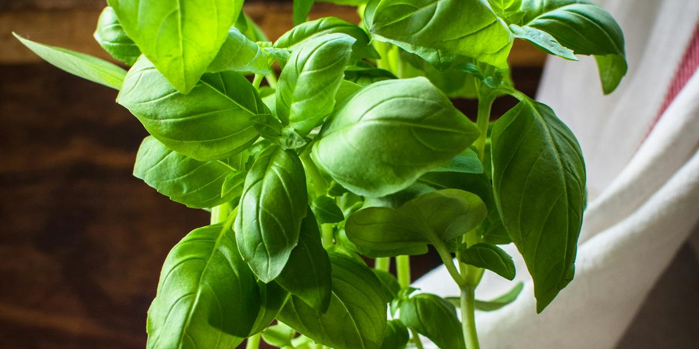

5 Easiest Crops for First-Time Hydroponic Growers
This post may contain affiliate links. As an Amazon Associate I earn from qualifying purchases.
The crop you pick for your first grow matters as much as the system. Pick something forgiving and fast, and you get a win that keeps you going. Pick a tomato in a quart jar, and you get frustration. Here are five crops that are well suited to small, simple hydroponic setups like mason jars, totes, and DWC buckets.
Every crop on this list is a leafy green or herb. That is not an accident. Leafy greens are harvested before they flower or fruit, so they need less light, less space, and less time than fruiting crops. Extension publications on small hydroponic systems, like UF/IFAS's guide to growing lettuce in small systems, focus on leafy greens for good reason.
1. Loose-leaf lettuce
Lettuce is the classic first hydroponic crop. The University of Hawaii developed and tested the Kratky method largely around lettuce. Loose-leaf types are the most forgiving because you can harvest outer leaves as they grow instead of waiting for a full head.
- Best system: Kratky jar or tote, DWC
- Light: bright window or simple LED
- Heat note: lettuce is a cool-season crop and tends to bolt in heat. In Texas summer, look for varieties labeled heat tolerant or slow to bolt, or grow indoors with AC.
Step-by-step: how to grow Kratky lettuce in a mason jar.
2. Butterhead lettuce
Butterhead (sometimes sold as Bibb or Boston) forms a soft, loose head. It is a favorite in hydroponic production and does well in Kratky. It takes a little longer than loose-leaf to fill out, but you get a pretty, tender head.
- Best system: Kratky, DWC, NFT
- Tip: give each plant room. Crowded heads stay small.
3. Basil
Basil loves warmth, which makes it a great match for Texas growers. It grows well in water culture and rewards regular pinching. When you harvest, snip just above a pair of leaves, and the plant branches out and gets bushier.
- Best system: DWC or a larger Kratky container; basil gets bigger than lettuce
- Light: likes lots of light
- Tip: pinch off flower buds to keep leaves coming.
4. Spinach-like greens and Asian greens
Bok choy, tatsoi, and similar Asian greens are fast and tidy. True spinach can be fussier in warm conditions, so beginners often have an easier time with bok choy or other Asian greens. In heat, these can bolt too, so they shine in fall through spring.
- Best system: Kratky, DWC
- Tip: baby bok choy is harvested young and fits small containers well.
5. Green onions (scallions)
Green onions are about the easiest thing you can grow in water. You can start them from seed, or regrow the white root ends from grocery store scallions by setting them in a little water. For more than a few regrowth cycles, nutrient solution in a small jar or tote keeps them going.
- Best system: small jar, Kratky tote
- Tip: snip the green tops and leave the white base to regrow.
Honorable mentions
Once you have a few wins, try herbs like mint, parsley, cilantro, and chives, or kale and Swiss chard for bigger plants. Mint is vigorous and roots easily. Cilantro tends to bolt in heat, so it is a cool-season herb in Texas.
What to skip at first
Fruiting crops like tomatoes, peppers, cucumbers, and strawberries can be grown hydroponically, but they need more light, larger containers, more nutrients, support, and often pollination help. Save them for your second or third season. My book covers when and how to step up.
Matching crops to Texas seasons
A simple way to think about it:
- Cool months (roughly fall through spring): lettuce, Asian greens, cilantro, kale
- Hot months: basil, heat-tolerant lettuce varieties grown indoors, green onions
Your exact timing depends on where you live in Texas and whether you grow indoors. If you are growing in summer, read keeping reservoirs cool first.
Seeds and starter supplies
You do not need special "hydroponic seeds." Regular garden seeds work. Rockwool cubes or other starter plugs, net pots, and a leafy-green nutrient are all you need. I keep my picks on the Gear page.
Plan your next harvest
Once you have picked a crop, the next question is how to keep it coming. That is what succession planting for nonstop salad is all about. Want a printable starter plan? Grab the free mini-guide on the home page, or get the full book, The Soil-Free Farming Revolution.
One crop at a time
It is tempting to plant a little of everything. For your very first grow, pick one or two crops from this list and learn how they behave in your space. You will get a feel for how fast they drink, how they respond to light, and when they are ready to harvest. Then add more.